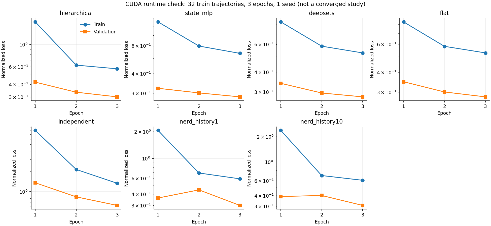
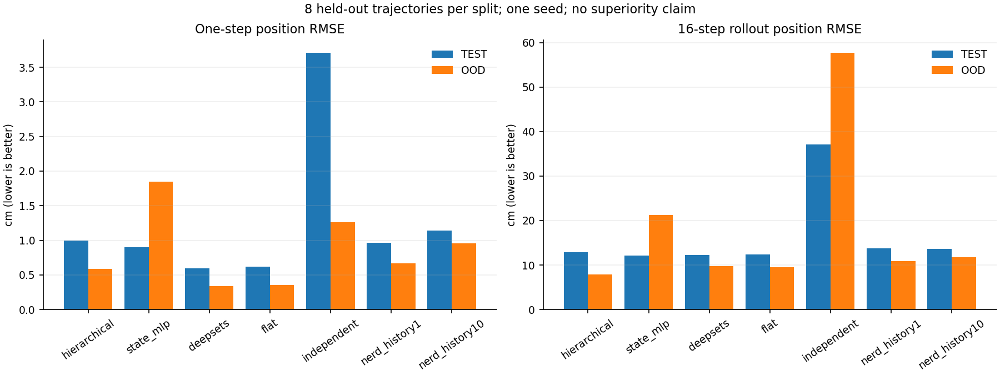

실제 GPU 실행과 대규모 데이터 준비 결과
이번 기록은 RTX 4060의 실제 CUDA 학습 경로 검증이다. 본 실험용 데이터는 모두 생성했지만, 10K trajectories × 50 epochs × 21회 비교는 아직 실행하지 않았다. 아래 짧은 학습은 모델 우열이나 수렴을 입증하지 않는다. 장기 실행 절차는 GPU 학습 안내를 따른다.
실제로 완료한 작업
| 항목 | 측정 결과 |
|---|---|
| 데이터 | train 10,000 + validation/test/OOD 각 1,000 = 13,000 trajectories |
| 길이 | 각 100 transitions, 101 states; 학습용 1,000,000 transitions |
| 생성 시간 | 171.79초, MuJoCo worker 8개 |
| 저장 | 51 NPY shards, float32, 배열 payload 128,232,000 bytes; JSON/header 별도 |
| GPU | NVIDIA GeForce RTX 4060, 8187.5 MiB |
| 학습 환경 | PyTorch 2.7.1+cu126, bf16 |
| 자동 검증 | 88 tests, failures/errors 0; 실제 Warp CUDA 포함 |
| CUDA 학습 재개 | 1 update 후 재개한 2-update 결과와 연속 학습의 최대 가중치 차이 0 |
| W&B | 실제 SDK offline 기록·run ID 재사용 확인; online 연결은 인증 미설정으로 미검증 |
완료된 데이터는 data/cube-nerd/에 있다. 같은 설정으로 generate --resume를 실행하면 완료 파일을 검증하고 재사용하며 manifest의 학습 식별자를 바꾸지 않는다. raw 결과는 outputs/gpu-check/, outputs/gpu-resume-check/, outputs/runtime/에 보존했다. 측정 JSON 다운로드에도 실험 설정과 지표를 함께 저장했다.
짧은 비교의 통제 조건
7개 모델은 동일한 training trajectory 32개, seed 0, 3 epochs, full-resolution point 입력과 width 128을 사용했다. 각 epoch는 3,200 transitions를 학습했고, batch 32 × accumulation 4로 nominal batch 128을 구성했다. scene별 배치들을 섞으며 마지막 작은 배치는 실제 표본 수로 나눈다. validation/test는 각 8개의 고정된 시나리오별 subset, OOD는 floor_wall 8개다. 평가는 validation으로 선택한 best.pt를 사용한다. rollout 길이는 16 steps이며 장기 본 실험의 100-step 평가와 다르다.
본 설정은 configs/suite_gpu_check.json의 실행 검증용이다. 본 비교의 10,000 trajectories, 50 epochs, nominal batch 512, 3 seeds보다 훨씬 작다. 평균화한 수치는 trajectory별 metric의 산술 평균이며 1 seed에서 통계적 유의성을 계산하지 않는다.

| 모델 | Epoch 1 → 3 val loss | Best val loss | 학습 기록 시간(s) | Parameters |
|---|---|---|---|---|
| hierarchical | 0.4219 → 0.3013 | 0.3013 | 24.8 | 1,070,910 |
| state_mlp | 0.3227 → 0.2848 | 0.2848 | 8.4 | 47,884 |
| deepsets | 0.3401 → 0.2792 | 0.2792 | 21.2 | 1,070,910 |
| flat | 0.3491 → 0.2807 | 0.2807 | 69.1 | 1,070,910 |
| independent | 1.3536 → 0.6278 | 0.6278 | 39.9 | 51,736 |
| nerd_history1 | 0.3624 → 0.2998 | 0.2998 | 9.1 | 467,468 |
| nerd_history10 | 0.3910 → 0.3070 | 0.3070 | 37.2 | 468,620 |
시간은 training.json.elapsed_seconds로 정규화·학습·validation·checkpoint 저장을 포함한다. 모델 구성, W&B 초기화/종료와 최종 test/OOD 평가는 별도다. 긴 학습의 정확한 소요 시간 예측치로 쓰지 않는다.
One-step과 자율 rollout

| 모델 | ID one-step 위치(cm) | OOD one-step 위치(cm) | ID rollout 위치(cm) | OOD rollout 위치(cm) |
|---|---|---|---|---|
| hierarchical | 0.995 | 0.586 | 12.91 | 7.91 |
| state_mlp | 0.899 | 1.849 | 12.12 | 21.20 |
| deepsets | 0.593 | 0.342 | 12.28 | 9.73 |
| flat | 0.618 | 0.355 | 12.37 | 9.47 |
| independent | 3.706 | 1.264 | 37.06 | 57.65 |
| nerd_history1 | 0.964 | 0.663 | 13.74 | 10.91 |
| nerd_history10 | 1.142 | 0.954 | 13.65 | 11.75 |
이번 짧은 실행에서 ID one-step 위치 오차가 가장 작은 모델은 deepsets(0.59 cm)이며, 계층형은 0.99 cm였다. ID one-step에서는 계층형의 우위가 관찰되지 않았다. 계층형의 ID 16-step rollout 위치 오차는 12.91 cm로 증가했다. OOD 16-step rollout에서는 계층형이 7.91 cm로 이 표의 다른 모델보다 작았다. 지표에 따라 순위가 달라지므로 하나의 평균 오차로 전체 성능을 판단할 수 없다. 구조의 우열을 결론낼 학습량·seed 반복은 아직 부족하다.
One-step 오차가 작아도 예측 상태를 다시 입력하는 rollout에서는 오차가 누적된다. 이 표의 OOD가 일부 ID보다 쉬워 보일 수 있지만, 두 split은 서로 다른 시나리오 분포다. OOD 값이 작다는 사실만으로 조합 일반화가 해결됐다고 해석하지 않는다. 학습량·seed·평가 trajectory가 부족하므로 이 순위를 계층형 구조의 최종 성능 순위로 사용하지 않는다. 본 실험에서는 validation 수렴, 3 seeds의 변동, 100-step rollout, 접촉 진입/유지 구간, A/B 결합 개입을 함께 평가한다.
재현 명령과 다음 단계
docker compose --profile cuda run --rm cuda python -m cube suite --config configs/suite_gpu_check.json --output outputs/gpu-check --resume
docker compose --profile cuda run --rm cuda python scripts/report_gpu_check.py
docker compose up -d docs
동일 경로에서 완료된 suite는 학습을 반복하지 않는다. GPU check를 새로 측정하려면 다른 출력 폴더를 사용하고 report 스크립트의 입력 경로도 조정한다. 본 비교는 .env에 W&B 인증을 설정한 뒤 실행한다.
docker compose --profile cuda run --rm cuda python -m cube suite --config configs/suite_gpu.json --output outputs/cube-gpu-suite --resume
먼저 계층형만 진행하려면 --models hierarchical을 추가한다. 기존 소규모 CPU 실험은 당시의 설정·결과로 보존하며, 이 GPU 기록과 동일한 실험인 것처럼 합산하지 않는다.